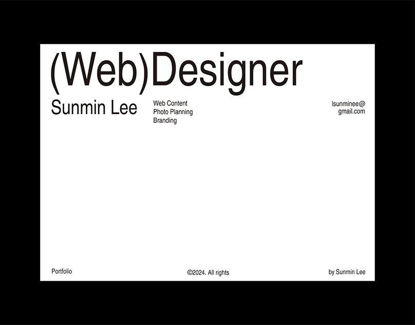

보내 주신 이미지를 눈으로 읽은 것이에요. 수치는 이미지(808px 폭)에서 눈대중으로 잰 근사값이에요.
6 observations

검은 프레임 + 흰 시트. 시트가 검은 바탕에 떠 있어요. 바깥 여백(좌우 약 10%, 위 14%)은 크고, 시트 안 글자는 가장자리에서 약 3.4%만 떨어져 있어요. 바깥은 넉넉하고 안쪽은 빡빡해요.
초대형 제목 한 줄. 가는 굵기, 글자 사이를 바짝 붙인 자간, 시트 폭의 약 75%. 괄호 "(Web)"가 그림 대신 쓰인 타이포 장치예요.
3단 정보 줄. 왼쪽 이름(중간 크기) / 가운데 작은 목록 / 오른쪽 연락처(오른쪽 정렬). 가운데 단의 시작선(점선)이 제목의 둘째 단어 "Designer"가 시작하는 선과 맞아요.
비어 있는 한가운데. 시트의 절반 가까이를 채우지 않았어요. 빈 공간이 이 디자인의 주인공이에요.
바닥 줄. 아주 작은 글씨 세 개를 왼쪽·가운데·오른쪽에 둬요. 제목 줄과 같은 3단 구조예요.
색과 장식이 없어요. 검정과 흰색뿐이에요. 테두리, 그림자, 둥근 모서리, 아이콘이 모두 없고, 위계는 크기로만 만들어요. 크기 비율은 제목 : 이름 : 본문 ≈ 8 : 3 : 1이에요.
참고 이미지에서 뽑은 일곱 가지를 Handoff 화면의 규칙으로 바꿨어요.
7 rules
코드에서는 이 이름 그대로 쓸 값이에요.
color / type / space
Color
Type · Pretendard Variable (Helvetica 느낌의 한글 겸용 서체, 무료)
| 토큰 | 크기 | 줄 간격 | 쓰는 곳 |
|---|---|---|---|
| display | clamp(44px, 11.4vw, 124px) | 0.92 | 시작 화면과 표지 한 번만 |
| title | clamp(26px, 4vw, 40px) | 1.08 | 화면 제목, 조직 이름 |
| lead | 18px | 1.45 | 입력칸 글자, 강조 문장 |
| body | 15px | 1.55 | 설명 글 |
| small | 12~13px | 1.45 | 라벨, 안내, 바닥 줄, 표 안 글자 |
한글 주의: 참고 이미지는 영문이라 자간을 -0.055em까지 줄여도 괜찮지만, 한글은 -0.04em을 넘기면 글자가 붙어 읽기 어려워요. 큰 영문 제목(display)만 -0.055em을 쓰고, 한글 문장은 title 이하에서 -0.035em까지만 써요.
| 간격 토큰 | 값 | 쓰는 곳 |
|---|---|---|
| frame | clamp(10px, 6vw, 80px) | 검은 바탕의 바깥 여백 |
| sheet-pad | clamp(14px, 2.2vw, 24px) | 흰 시트 안쪽 여백 |
| section-gap | clamp(28px, 5vw, 56px) | 시트 안의 줄 사이 |
| unit | 4 · 8 · 12 · 16 · 24 · 40 · 64px | 그 밖의 모든 간격 |
| control | 높이 40px (터치 44px) | 버튼, 입력칸 |
모든 화면은 같은 틀을 써요. 틀 안에서 바뀌는 것은 가운데 빈 영역뿐이에요.
frame / sheet
지금 화면의 요소를 새 규칙으로 바꾼 모양이에요. 마우스를 올려 보세요.
live samples
Button
직각, 1px 선, 호버하면 흑백 반전. 주 행동은 검은 채움.
Input
테두리 대신 아래 선 하나. 라벨은 위에 작게.
Choice
조직 종류 같은 선택은 붙어 있는 네모. 고른 것은 검은 채움.
Screen nav · Steps
화면 이동은 글자만, 단계는 "n / 4"로 구분해서 숫자가 겹치지 않게 해요.
Error
괄호 라벨 + 붉은 글자. 붉은 색은 여기서만 써요.
(오류) 조직 이름을 입력해 주세요
(오류) 지원하지 않는 파일: 회칙.docx
List row
카드 대신 위아래 선 한 줄. 빼기는 밑줄 글자.
Checklist
검은 칸 = 채워진 정보, 흰 칸 = 빠진 정보. 색 대신 채움·점선·빗금·회색으로 구분하고, 칸 안에 글자도 함께 써서 모양만으로 구분하지 않게 해요.
어느 조직의 어떤 업무를 인수인계하는지
알려 주세요.
Mock data
칸을 누르면 아래에 근거 문장이 작은 글씨로 나타나요. 검은 칸이 많을수록 인수인계가 잘 채워진 거예요.
코드에 들어가기 전에 이 네 가지만 정하면 돼요. 추천을 먼저 적었어요.
4 + 5
현재 테스트(89개)는 역할과 글자로 요소를 찾기 때문에 대부분 그대로 통과해요. 색 이름에 기대는 테스트는 없어요. 바뀌는 건 모양이고 동작은 그대로예요.